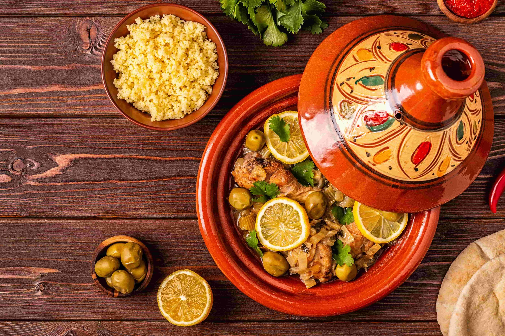

Recette traditionnelle
Tajine de poulet aux olives
Un plat traditionnel marocain savoureux, alliant le poulet tendre
aux olives et aux épices parfumées.
Timourti Sana

alt="Tajine de poulet aux olives marocain" />
Tajine traditionnel marocain
Informations
420 kcal par portion
Ingrédients
- 4 cuisses de poulet
- 200g d'olives vertes
- 2 oignons émincés
- 2 gousses d'ail
- 1 citron confit
- 2 c. à soupe d'huile d'olive
- 1 c. à café de gingembre
- 1 c. à café de curcuma
- 1 pincée de safran
- Coriandre fraîche
- Sel et poivre
Préparation
-
Dans une cocotte, faire dorer les cuisses de poulet dans l'huile d'olive.
-
Ajouter les oignons émincés, l'ail, les épices (gingembre, curcuma, safran), sel et poivre. Mélanger et laisser revenir 5 minutes.
-
Couvrir d'eau à hauteur, ajouter le citron confit coupé en quartiers. Laisser mijoter 45 minutes à feu doux.
-
Ajouter les olives vertes et poursuivre la cuisson 15 minutes.
-
Parsemer de coriandre fraîche et servir chaud avec du pain marocain.
Avis des internautes
★★★★★ 5/5
" Délicieux tajine, recette authentique comme à Marrakech ! "
★★★★☆ 4/5
" Très bon, j'ai ajouté un peu de citron supplémentaire. "